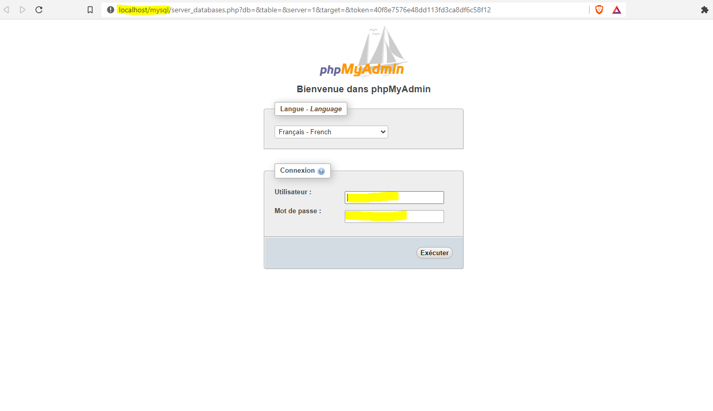
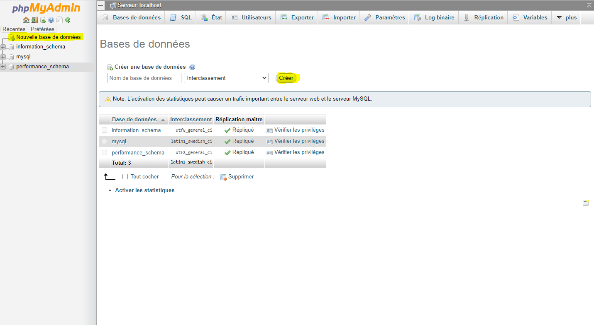
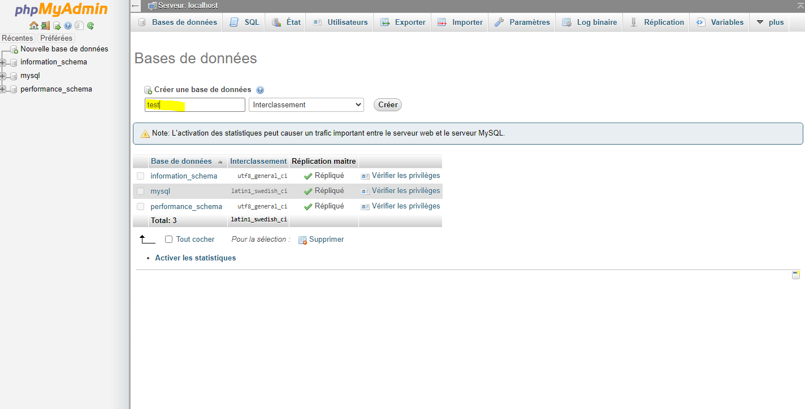
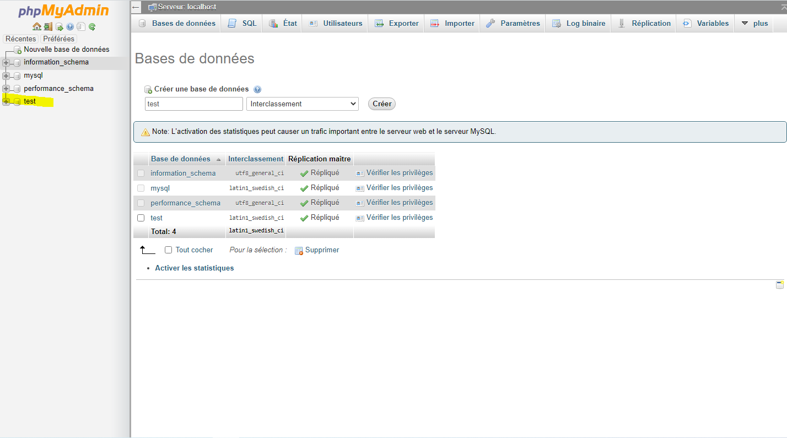
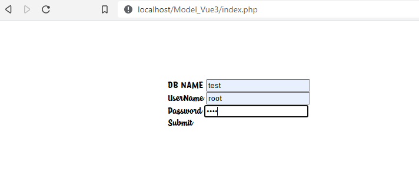
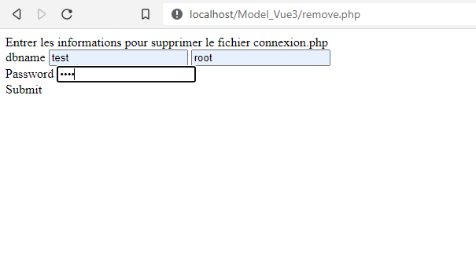

Connexion dans la BDD
Création d'une nouvelle base de donnée
Création d'une table choissisez le nom que vous voulez
Création d'une nouvelle base de donnée
Vous pouvez maintenant vous connecter
Connexion reussi message de bienvenue
Vous pouvez effacer le fichier de configuration manuellement en allant dans remove.php racine du projet